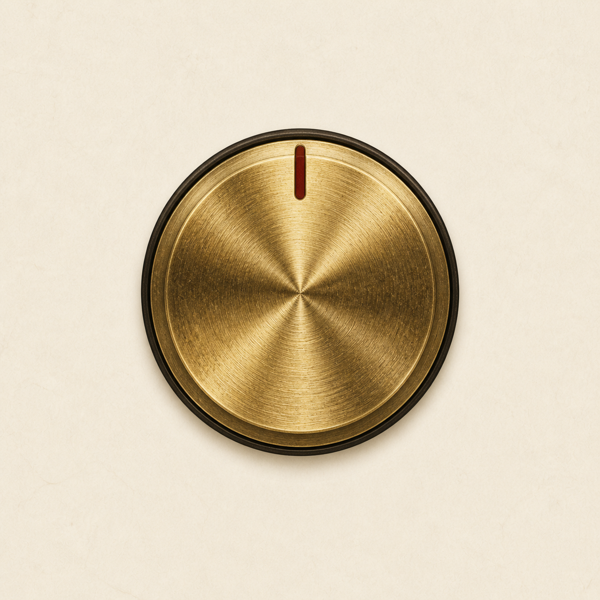

Sinovox 声音工坊
中文拼音 · English · Kraftor speech instrument
SERIAL (Web Serial)
Serial port
Not connected
MIDI (Web MIDI)
Match the channel number set by DIP1–DIP4, then reset the board. All OFF selects Omni.
Language
CC 4
1
Voice
CC 1
0

Pitch
Pitch bend · 0–10
5
Speed
CC 2 · 0–10
5
Volume
CC 3 · 0–10
10
RAM — 20 slots · row #0 = MIDI 28 · notes 28–47
FRAM — storage + MIDI notes start at 48 (not 28); row #0 = MIDI 48
Connect to a board with FRAM (RC256 at 0x50) to edit sentences.
Live device messages